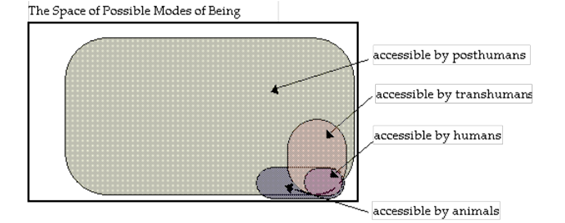

Abstract
Transhumanism: The Next Phase of Human Evolution
Transhumanism is both a philosophical and technological movement which aims to remove the biological limitations that constraint human beings through technological innovation. This article focuses on the philosophical basis of transhumanism, attempting to find its humanistic roots while analysing current and future technologies related to human enhancement. Additionally, it analyses transhumanism as a philosophy promising transformation but also having extreme ethical dangers.
What Is Transhumanism?
Transhumanism is often regarded in both philosophical and scientific areas (as mentioned before) which is aimed at giving us the ability to determine our own evolution. Its also very similar to posthumanism and can be seen as “a loosely defined movement that has developed gradually over the past two decades” which “promotes an interdisciplinary approach to understanding and evaluating the opportunities for enhancing the human condition and the human organism opened up by the advancement of technology” (Bostrom, 2005, ‘Transhumanist Values’, Journal of Evolution and Technology, 14(1), pp. 1–25. Date accessed: 20/10/2025). Of course, this philosophy/technological movement is entirely reliant on the belief that the current state of humanity isn’t the last but just an early one when compared to the possibilities of humans and technology combining.
Bostrom, N. (2008) Why I Want to be a Posthuman When I Grow Up. Available at: https://nickbostrom.com/posthuman.pdf (Accessed: 21 October 2025).
Like how posthumanism is somewhat the future state of transhumanism, its precursor can be viewed as “enlightenment humanism”, where reason and progress were seen as the means for improving the human condition. Elise Bohan describes transhumanism as "a continuation of the humanist project, recast in the context of exponential technological growth" (Bohan, 2019, 'A History of Transhumanism', Transcendence Studies Review, 3(2), pp. 45–67. Date accessed: 21/10/2025). She places it within a longer philosophical lineage, showing how the history of transhumanism can be trace from twentieth century “scientific optimism”. Julian Huxley, who coined the term transhumanism for the first time in 1957, envisioned it as the next logical step in human evolution:an era when humanity would consciously shape its biological destiny.
According to Hrynevych and Shyshkina, transhumanism represents "the ethos of enhancement and the search for identity in a world where human boundaries are increasingly redefined by technology" (Hrynevych & Shyshkina, 2023, 'Transhumanism in the Context of Ethos of Enhancement and Search for Identity: Philosophical Origins', Skhid, 3(1), pp. 102–111. Date accessed: 21/10/2025). Their analysis emphasizes that transhumanism is not purely technological but highly philosophical since it also tackles what it means to be human in an age of rapid technological innovation. Similarly, Kowalska insists that transhumanism "reinterprets the Enlightenment ideal of human perfectibility through the lens of modern biotechnology and artificial intelligence" (Kowalska, 2018, 'Transhumanism and Human Enhancement', Ethics in Progress, 9(2), pp. 55–70. Date accessed: 21/10/2025). This reflects an evolution rather than a rejection of humanist values, placing faith in reason, science, and progress as trojan horses for self-improvement.
Current and Future Transhumanist Technologies
The most important among the various contemporary transhumanist tech are genetic engineering, artificial intelligence, neurotechnology, and nanotechnology.
Similar to the spartans from the science fiction story of Halo, with technology like CRISPR-Cas9, scientists not only seek to eliminate hereditary diseases but also try to create enhanced humans who might be more intelligent, stronger, or live longer. As Bostrom details, transhumanism “focuses on both present technologies, such as genetic engineering and information technology, and anticipated future technologies, such as molecular nanotechnology and artificial intelligence” (Bostrom, 2005, ‘Transhumanist Values’, pp. 4–5. Date accessed: 20/10/2025). And another part of this relates to research in areas such as anti-aging which aim to remove our own mortality.
Transhumanism also aims at the integration of consciousness with artificial intelligence by "merging" the human brain with systems of computation through BCIs or neural prosthetics. Technologies such as the Neuralink brain implant show the possibility of human thought directly communicating with digital systems which in the process can help people with certain physical disabilities.
Cybernetics and robotics are probably the most popular aspect of transhumanism, the integration of humans and machines through exoskeletons and robotic limbs to significantly push the capabilities of our physical capabilities. Hrynevych and Shyshkina argue that such developments “blur the distinction between organic and mechanical existence, transforming the human body into a site of technological co-evolution” (Hrynevych & Shyshkina, 2023, ‘Transhumanism in the Context of Ethos of Enhancement’, pp. 107–108. Date accessed: 21/10/2025). Whilst the most popular depiction of what people think when they hear the word transhumanism or similar concepts, it also has the potential to be the most dangerous as most of the applications I looked at were related to military use.
Looking ahead, the philosophy of transhumanism speculates on nanotechnology, mind-uploading, and digital immortality. According to Bostrom, in the future, “uploading a human mind to a computer” will enable people to make “backup copies of themselves” (Bostrom, 2005, ‘Transhumanist Values’, p. 10. Date accessed: 20/10/2025). Although this is very speculative, the idea does open up some very important questions of identity, consciousness, and the nature of existence. According to the Oxford Research Archive, this is a future wherein “posthumanism envisions beings of vastly greater capacities than present humans,” brought about by technological and evolutionary convergence (Oxford Research Archive, 2020, ‘A History of Transhumanist Thought’, pp. 3–5. Date accessed: 21/10/2025).
Evaluation / Conclusion
While transhumanism shares humanism's faith in progress, it also hangs extremely close to uncomfortable racial dilemmas with its comparisons to eugenics. Both movements are driven by the desire to improve the human species through selective intervention. Early twentieth-century eugenics, most commonly in Nazi Germany, pursued this through imposing reproduction controls to eliminate perceived "undesirable" traits. In contrast, transhumanism proposes voluntary, technologically mediated enhancement. Yet the ethical risks remains the same. As Bohan notes, "the line between self-directed enhancement and socially enforced perfection is perilously thin" (Bohan, 2019, ‘A History of Transhumanism’, p. 62. Date accessed: 21/10/2025).
While eugenics had its roots in social control and exclusion, if transhumanism goes wrong, it could yield a new order of the "enhanced" and the "unenhanced." The potential for inequality is huge: those who can afford access to enhancement technologies could enjoy profound advantages in intelligence, health, and longevity, effectively becoming a new elite. As Bostrom says, "the same technologies that could be used to enhance human life could, if misused, cause enormous harm, ranging all the way to the possibility of intelligent life becoming extinct" (Bostrom, 2005, ‘Transhumanist Values’, p. 13. Date accessed: 20/10/2025). This already has a current parallel with the ‘digital divide’ referring to the global divisions between those who have access to the internet and those who don’t.
Therefore, transhumanism must be guided by serious ethical principles, democratic/academic oversight, and respect for human dignity. Without these, its pursuit of perfection risks repeating history’s darkest tragedies under the guise of progress.
Conclusion
Transhumanism is where scientific ambitions supersede our own humanity, giving promises of freeing us from disease, aging, and even death whilst dangerously balancing itself between expanding the current human condition and becoming a modern day case of eugenics.
Word Count
Calculating...
References
- Bohan, E. (2019) ‘A History of Transhumanism’, Transcendence Studies Review, 3(2), pp. 45–67. Date accessed: 21/10/2025.
- Bostrom, N. (2005) ‘Transhumanist Values’, Journal of Evolution and Technology, 14(1), pp. 1–25. Date accessed: 20/10/2025.
- Hrynevych, N. & Shyshkina, M. (2023) ‘Transhumanism in the Context of Ethos of Enhancement and Search for Identity: Philosophical Origins’, Skhid, 3(1), pp. 102–111. Date accessed: 21/10/2025.
- Kowalska, A. (2018) ‘Transhumanism and Human Enhancement’, Ethics in Progress, 9(2), pp. 55–70. Date accessed: 21/10/2025.
- Oxford Research Archive (2020) ‘A History of Transhumanist Thought’, pp. 3–5. Date accessed: 21/10/2025.